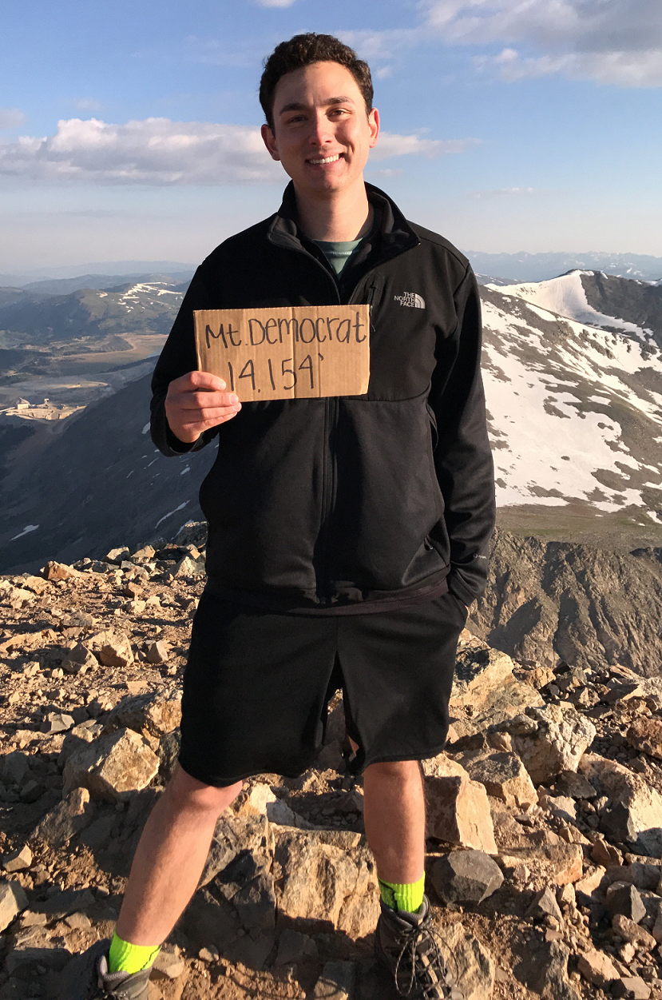

Hi, I'm Ross Blassingame.
I'm a senior at CU-Boulder studying Computer Science set to graduate this May. I like the outdoors, staying active, building software.
Feel free to take a look around my website. You can learn more about me in the "About" page, see my projects in the "Projects" page, and view my resume in the "Resume" page.